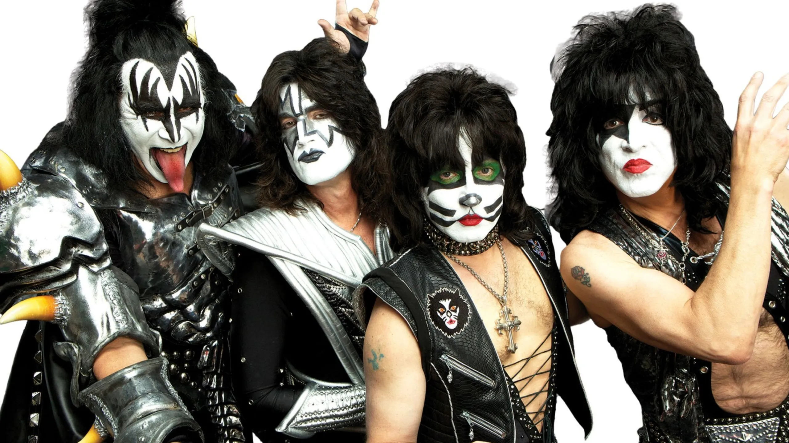

Kiss
KISS es una icónica banda de rock estadounidense formada en Nueva York en 1973 por Paul Stanley, Gene Simmons, Peter Criss y Ace Frehley. Son conocidos por su estilo teatral, que incluye maquillaje facial distintivo y trajes llamativos, lo que los convirtió en una de las bandas más visualmente reconocibles de la historia del rock.
Albums


Fotos de la banda
